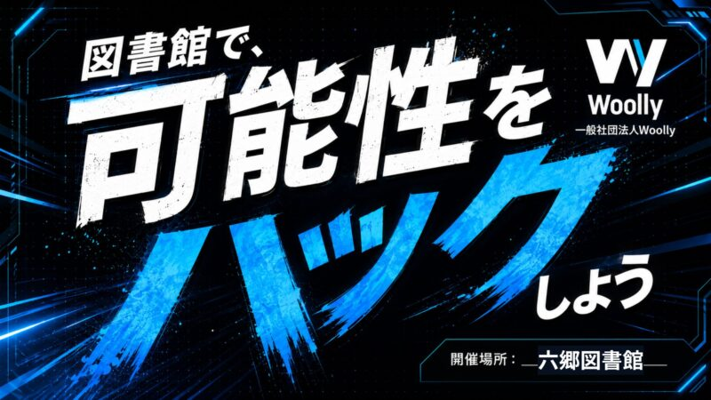
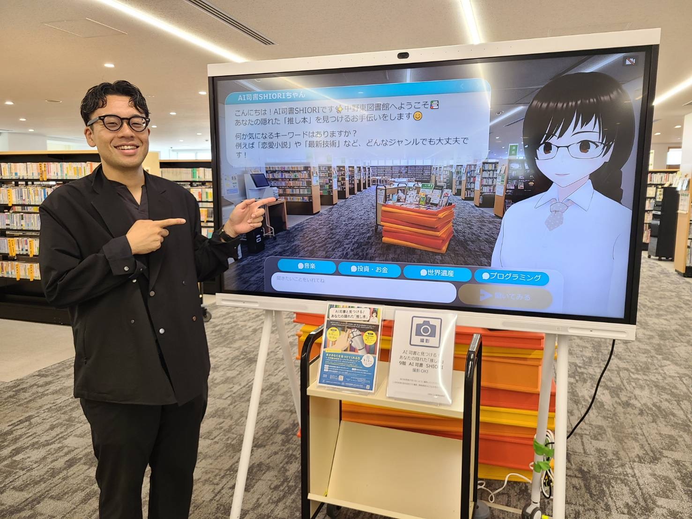

2025.10

新しい言葉を知ることで、新しい選択肢が生まれる
kobashiruは言葉にならない"コトバ"を探せるツールです
言葉は知っているようで、実は知らない。
例えば、役不足（やくぶそく）。 本来の意味は 自分の能力に対して、与えられた役目が軽すぎる。
多くの人は、自分の能力に対して、役目が重すぎて荷が重いという意味だと思ってる。
しかし、世の中にある言葉を全て知ることは難しい
また、知らない言葉を知ることほど難しいことはない
ではどうすればいいのだろうか
活用シーン
モヤモヤした希望を言葉にして、学校や仕事の選択肢を見つけます。
気になったことを、調べられる問いやテーマに変えます。
大切にしているキャリアの軸を整理します
お知らせ
2025.10

2026.03

2026.04
運営団体
| 団体名 | 一般社団法人Woolly |
|---|---|
| 設立 | 2023年12月 |
| 代表 | ナカムラヨシユキ |
実証のご相談